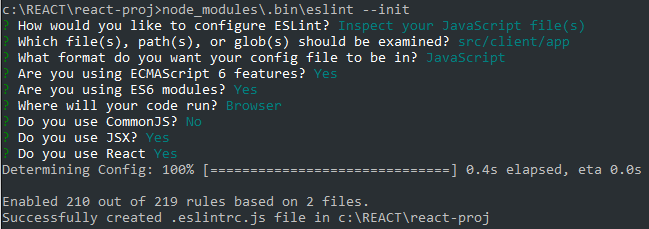

[< Prev](./components.html) | [Home](./) | [Next >](./task-runner.html)
#Hot Reload
###Server content
install webpack-dev-server
```
[project]> npm i -D webpack-dev-server
```
run webpack-dev-server
```
[project]> node_modules\.bin\webpack-dev-server --content-base src/client/public --inline --hot --port 9000
```
That's it! Just `Ctrl+S` and see the browser from now on.
#Linting
###Configuring ES Lint
install ES Lint
```
[project]> npm i -D eslint eslint-plugin-react eslint-watch
```
Generate ES Lint config file
```
[project]> node_modules\.bin\eslint --init
```
It's going to ask you a few questions. Answers:
<br />
</img>
<br />
The config file `.eslintrc.js` is generated.
Slight modification to the `.eslintrc.js` file:
change `"extends": "eslint:recommended",` to `"extends": ["eslint:recommended", "plugin:react/recommended"],`
###Run Linting
run ES Lint on our JavaScript files.
```
[project]> node_modules\.bin\eslint src/client/app/**/*.js
```
Continuously run linting
```
[project]> node_modules\.bin\esw src/client/app/**/*.js -w
```
###Time to fix all the errors
Using PropTypes to resolve the issue `'message' is missing in props validation react/prop-types`
``` javascript
/** example **/
import React, {PropTypes} from 'react';
Component.propTypes = {
size: React.PropTypes.number,
position: React.PropTypes.string.isRequired
}
```
###Disabling Linting
For a file: `/*eslint-disable */` or `/*eslint-disable rule-name */`
For a single line: put this comment above the code line `//eslint-disable-next-line rule-name`
<br />
[< Prev](./components.html) | [Home](./) | [Next >](./task-runner.html)